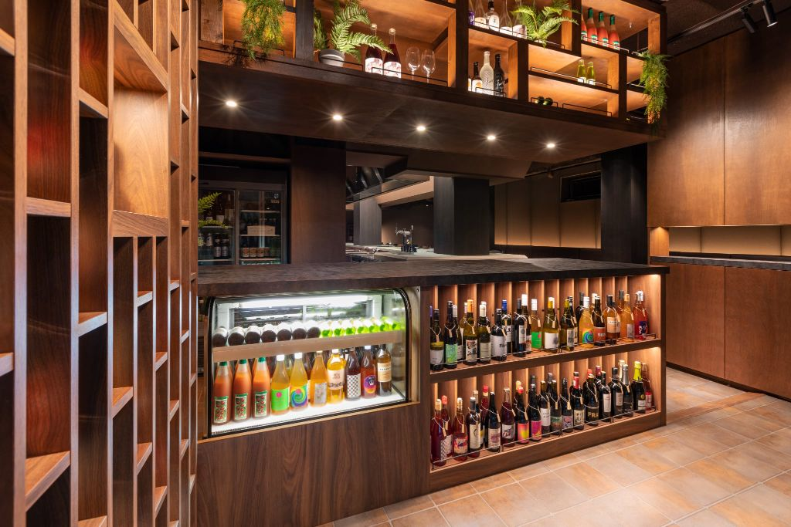

📷
焼肉きゅうこん（目黒）― ワインセラーと豊富なドリンクが彩る、上質な焼肉の空間
「仲間と囲む肉と酒の時間が、いつの間にか特別な記憶になる。
目黒に、そんな焼肉店がある。」
目黒に、そんな焼肉店がある。」
― FOOTBALL CONNECTION 編集部コメント
FOOTBALL CONNECTION MEMBER
オーナーの阿部洋介氏は法政大学・シルバースターOB。アメフトで培った「仲間を信じる・支え合う・役割を果たす」という価値観を、そのまま店づくりへ。
🥩 このお店について
東京・目黒1丁目、テルレビルの地下1階。
階段を下りると広がるのは、洗練された空間と、どこか落ち着いた空気感だ。
焼肉きゅうこんは2022年5月、阿部オーナーが九州の生産者との
出会いに背中を押されて開いた一軒。
「ただ食事をする場所じゃなく、ここに来れば誰かに会える、また来たくなる店にしたい」——
その想いが、内装から接客、肉の選び方まで、店のすみずみに宿っている。
QUALITY & CONNECTION
九州の生産者と向き合った、上質な肉
開業のきっかけとなった九州の生産者とのご縁。
その関係を今も大切に育てながら、素材に真剣に向き合い続けている。
丁寧に焼き上げた肉の旨味は、食べた人の記憶に残る。
目黒という好立地、地下の落ち着き
JR・東急目黒駅から徒歩圏。仕事帰り、チームの集まり、会食の場として使いやすい。
地下という非日常的な空間が、自然と会話のボルテージを上げてくれる。
初めてでも、迷わず選べる一軒
大切な仲間を連れて行っても、大切なビジネスの場として使っても、
どちらにも応えてくれる。
コース設定があるため幹事も安心して任せられる。
✦ OWNER'S VISION ✦
「ただ食事をする場所ではなく、地域に根付き、人が集い、つながりが生まれる場所を目指している。」
生産者・スタッフ・お客様との「ご縁」を大切に、 目黒で永く愛され続ける一軒になることが、阿部オーナーの目標だ。
生産者・スタッフ・お客様との「ご縁」を大切に、 目黒で永く愛され続ける一軒になることが、阿部オーナーの目標だ。
🏈 アメフト関係者への一言
法政大学・シルバースターでプレーした阿部オーナーは、 「仲間を信じる」「支え合う」「役割を果たす」というアメフトの価値観を、 そのまま店づくりに重ねている。 チームで食卓を囲む感覚は、アメフト経験者には特に響くはずだ。
OB会の一次会に、チームの集まりに、懇親会の場として―― 「誰かを連れて行きたい店」として機能する。 アメフト仲間に「目黒でいい焼肉ない？」と聞かれたら、迷わずここを答えてほしい。
📅 おすすめ利用シーン
チームの
集まり
集まり
OB会・
同期会
同期会
会食・
接待
接待
打ち上げ・
懇親会
懇親会
仲間との
食事
食事
目黒の夜
を楽しむ
を楽しむ
📋 基本情報
| 🏪 店名 | 焼肉きゅうこん |
| 📍 エリア | 東京都目黒区 目黒 |
| 🚉 最寄駅 | JR・東急 目黒駅（徒歩圏） |
| 🏠 住所 | 東京都目黒区目黒1丁目5-4 テルレ地下1階 |
| 📞 電話 | 03-6910-4781 |
| 🕐 営業 | 17:00〜23:00（LO 22:00 / コースLO 21:00 / ドリンクLO 22:30） |
| 🗓️ 定休日 | 不定休 |
| 🍽️ ジャンル | 焼肉 |
| 🔗 公式サイト | kyukon.tokyo |
| @kyukon294 | |
| 👤 オーナー | 阿部洋介（法政大学・シルバースターOB） |